Várzea Grande
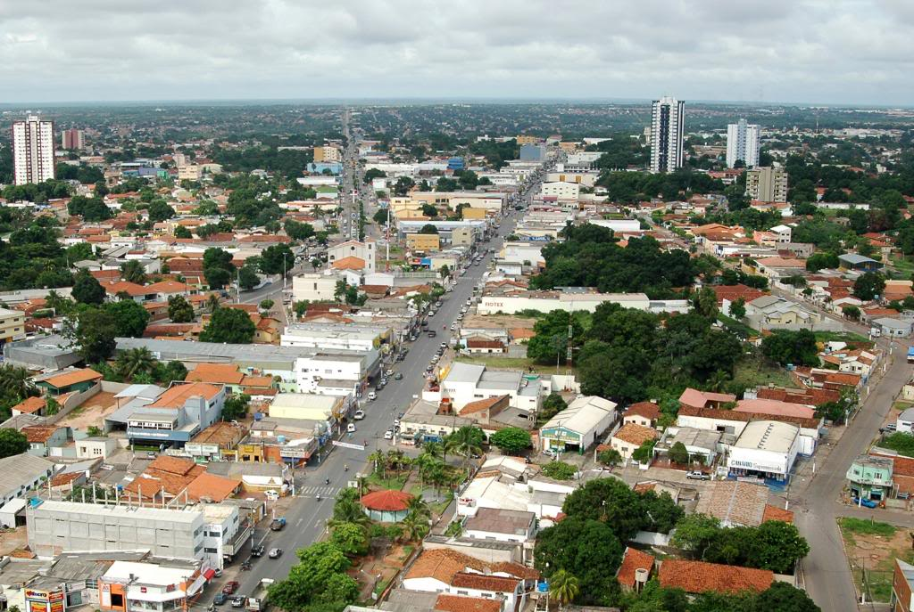Várzea Grande é uma cidade situada no estado de Mato Grosso, próxima à capital Cuiabá, e desempenha um papel importante como uma cidade de acesso a atrações turísticas da região Centro-Oeste do Brasil. Embora não seja tão conhecida como outras grandes cidades turísticas do Brasil, Várzea Grande tem grande relevância econômica, histórica e cultural, principalmente por sua proximidade com o Pantanal e a Chapada dos Guimarães, dois dos destinos mais procurados do estado. A cidade serve como um ponto estratégico de passagem para aqueles que visitam Cuiabá, além de contar com uma infraestrutura em crescimento para o turismo de negócios e lazer.
Várzea Grande tem crescido no setor turístico devido ao seu potencial ecoturístico, à proximidade com áreas de preservação ambiental e ao desenvolvimento de infraestrutura para eventos. A cidade também tem uma rica cultura local, com influências das tradições indígenas, africanas e europeias, refletidas em sua gastronomia e festividades.
Principais pontos turísticos
- Parque Nacional de Chapada dos Guimarães 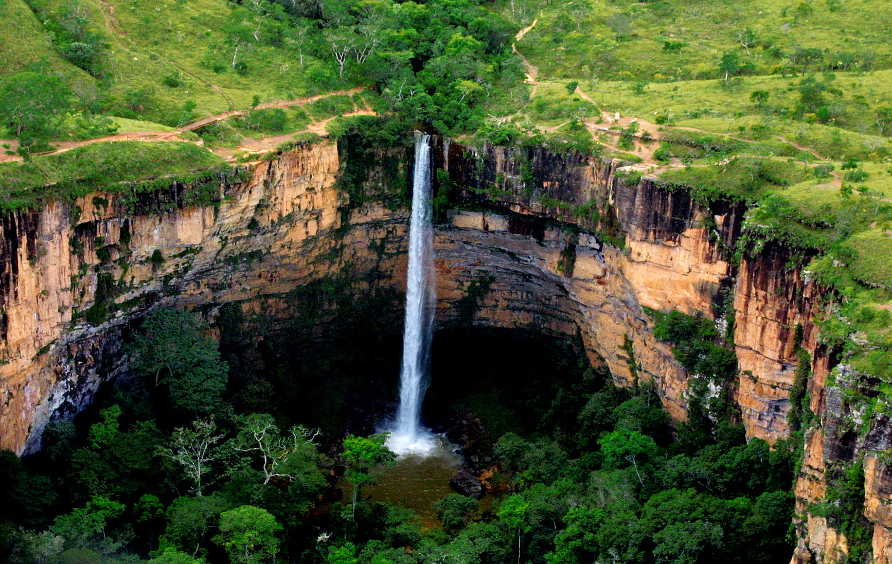
- Igreja de São João Batista 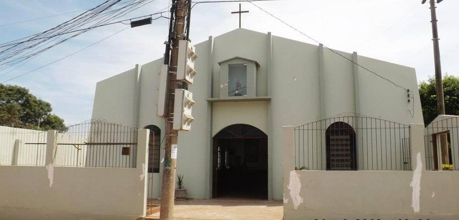
- Centro Cultural de Várzea Grande 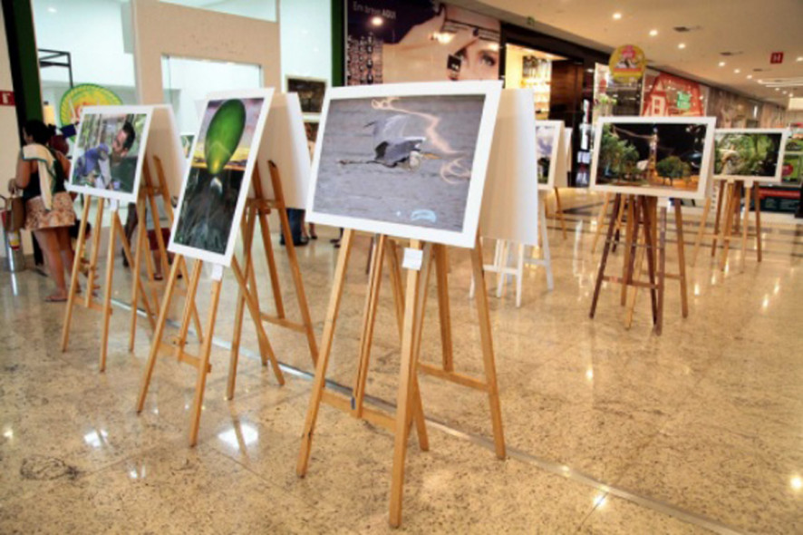
- Praia Passagem da Conceição 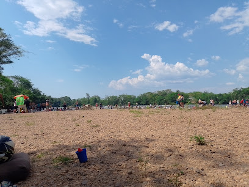
Embora não esteja diretamente em Várzea Grande, a Chapada dos Guimarães é uma das principais atrações turísticas da região e pode ser facilmente acessada a partir da cidade. O parque é conhecido por suas impressionantes formações rochosas, cachoeiras e trilhas, além de vistas deslumbrantes da região.
A Chapada dos Guimarães é um destino imperdível para os amantes de natureza e ecoturismo. Suas trilhas e cachoeiras atraem visitantes que buscam aventura e contato com a natureza em um ambiente de grande beleza natural.
A Igreja de São João Batista é um marco religioso e histórico de Várzea Grande, sendo um dos principais pontos de visitação religiosa da cidade. Sua arquitetura é simples, mas reflete a história do município e sua importância como centro de fé.
A igreja é um ponto turístico relevante para quem deseja conhecer mais sobre a história e a cultura religiosa de Várzea Grande, sendo um local de tranquilidade e reflexão.
O Centro Cultural de Várzea Grande é um espaço dedicado a promover e preservar a arte e cultura local. Ele oferece uma programação variada de exposições, shows e eventos culturais que celebram as tradições da cidade e da região.
O centro cultural é essencial para quem deseja se aprofundar na história e nas manifestações artísticas de Várzea Grande e de Mato Grosso, proporcionando uma experiência imersiva na cultura local.
A Praia Passagem da Conceição é uma das praias fluviais de Várzea Grande, localizada às margens do Rio Cuiabá. A Praia Passagem da Conceição oferece uma opção tranquila e natural para quem busca lazer e contato com a natureza. Com uma extensão que permite aos banhistas aproveitar o rio, é um local perfeito para um passeio relaxante, banhos de sol ou até mesmo piqueniques em família. Apesar de ser uma praia com características mais simples, a Passagem da Conceição conta com uma infraestrutura básica para os turistas, como barracas de venda de comida e bebidas, além de áreas para descanso e lazer.
A praia é um local bastante procurado para atividades de lazer, como passeios de barco, pesca ou até pequenas excursões pelo Rio Cuiabá. A Praia Passagem da Conceição é mais frequentada por moradores de Várzea Grande e Cuiabá, sendo uma ótima opção para quem não quer sair muito da cidade e ainda assim aproveitar momentos de descanso à beira d'água.
Principais pontos gastronômicos
- Primus Peixaria 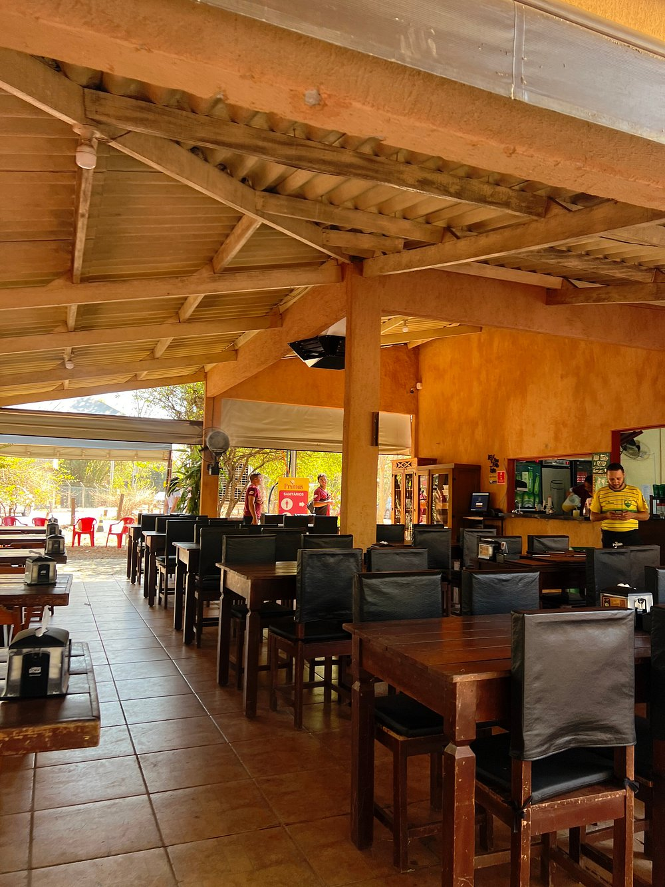
- Localização: São Gonçalo Beira Rio.
- Mirante das Águas 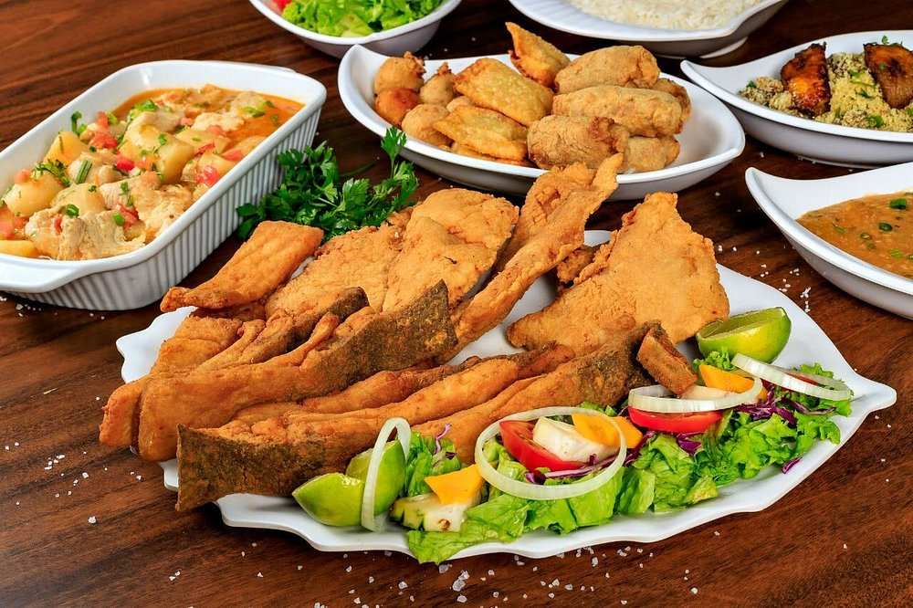
- Localização: Próximo ao Rio Cuiabá.
- Detroit Steakhouse 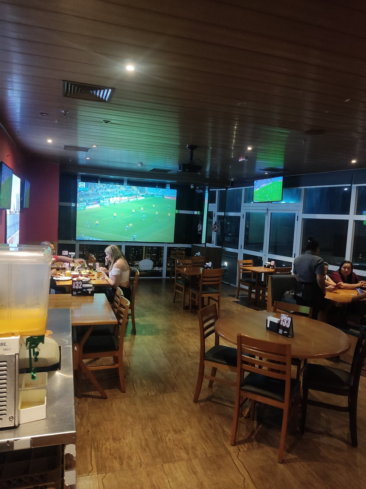
- Localização: Várzea Grande Shopping.
- Mega Pizzaria 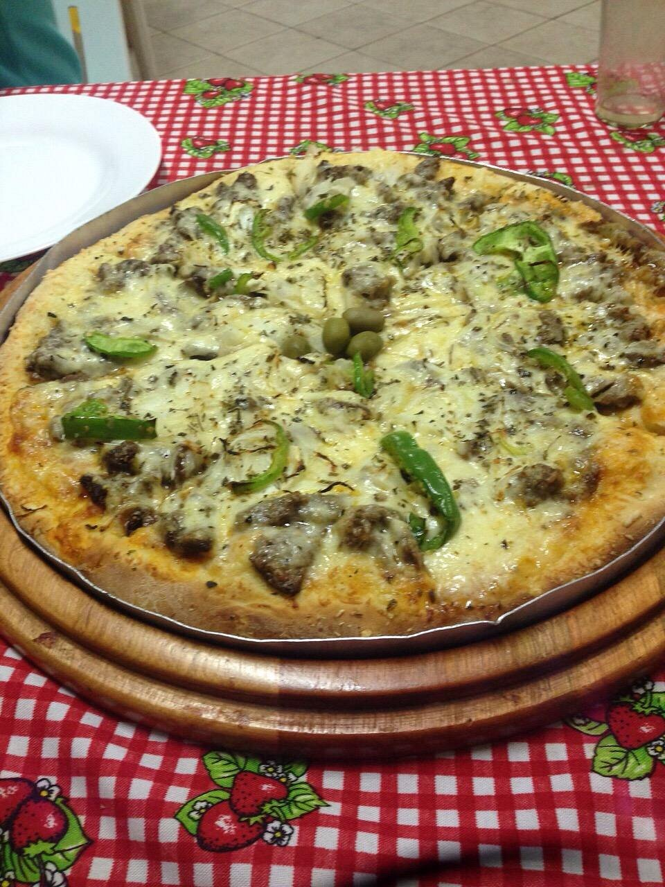
- Localização: Centro de Várzea Grande.
Restaurante regional, às margens do rio Cuiabá. Ofertamos um espaço aconchegante e ambiente familiar, com o privilégio de contemplar a natureza enquanto almoça.
Local bem arejado, comida gostosa, bom atendimento, playground com monitora, preço justo e estacionamento gratuito.
O Mirante das Águas conta com uma estrutura perfeita para viver bons momentos bem juntinho a natureza. Salão, playground infantil, campo gramado, lan house, casinha de bonecas, pergolado com deck e estacionamento.
Um dos pratos mais pedidos é a peixada cuiabana. Um dos pratos alacartes mais deliciosos do seu cardápio.
Com ambientação descontraída e casual, o Detroit Stakehouse possui ampla visibilidade interna e externa. Ideal para a família, o restaurante têm um espaço inteiro dedicado às crianças com uma brinquedoteca bastante diversificada proporcionando aos pais tranquilidade e às crianças diversão com segurança.
Funcionários atenciosos e educados, buffet diversificado e boa comida fazem do Detroit Stakehouse um local que deve ser visitado.
Local simples porém aconchegante, possui um cardápio variado de pizzas, todas feitas com ingredientes fresquinhos.
As pizzas são feitas na hora, e dentre os pedidos mais exigidos tem-se a pizza de filé acebolado e a pantaneira.
Principais pontos culturais
- Festa de São João 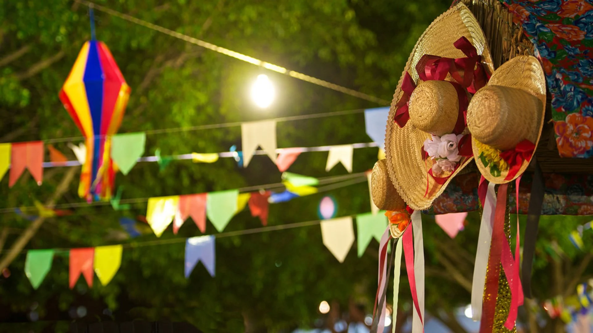
- Localização: Diversos locais.
- Festival de Música e Dança de Várzea Grande 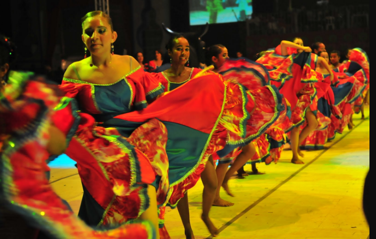
- Localização: Diversos locais de Várzea Grande.
- Festa do Divino Espírito Santo 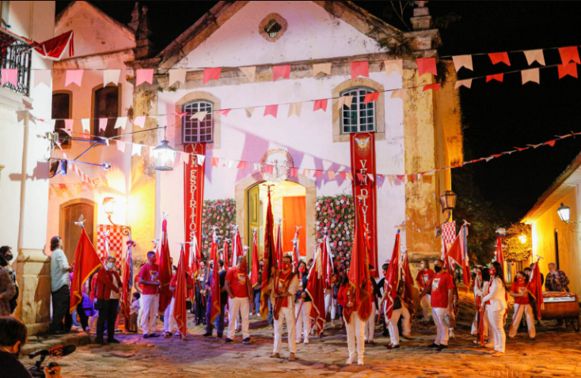
- Localização: Várzea Grande.
A Festa de São João é uma das principais celebrações religiosas e culturais de Várzea Grande, realizada anualmente em junho. A festa conta com missas, procissões, danças típicas e pratos tradicionais, como o arroz com pequi e o churrasco.
A Festa de São João é um evento de grande importância para a população local, celebrando as tradições católicas e as manifestações culturais da cidade, como as danças folclóricas.
O Festival de Música e Dança de Várzea Grande é um evento anual que reúne artistas locais e regionais para apresentações de música e dança, com destaque para os estilos de dança típicos da região, como o siriri e o cururu.
Este festival é uma excelente oportunidade para turistas conhecerem a música e a dança tradicional de Mato Grosso, promovendo a cultura local de maneira vibrante e acessível.
A Festa do Divino Espírito Santo é uma tradicional festa religiosa que ocorre todos os anos em Várzea Grande. A celebração envolve procissões, danças típicas e apresentações culturais, com uma grande participação da comunidade.
Esta festa religiosa é um dos maiores eventos culturais de Várzea Grande e representa a devoção local, além de ser uma oportunidade para os turistas vivenciarem a religiosidade e as tradições populares da cidade.